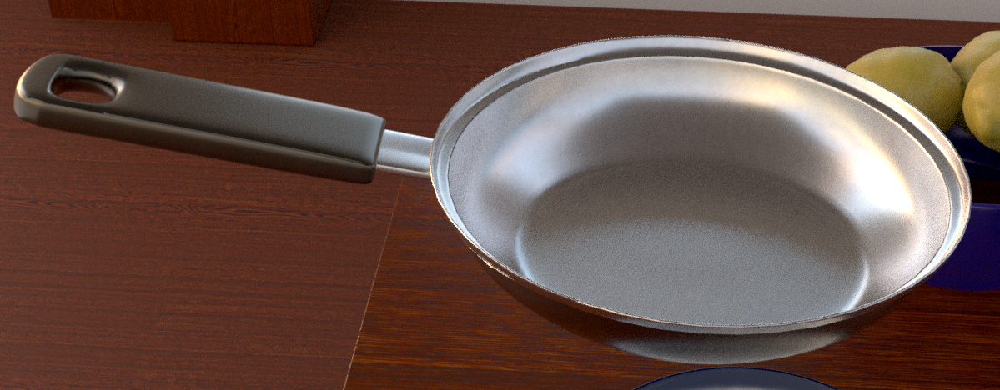
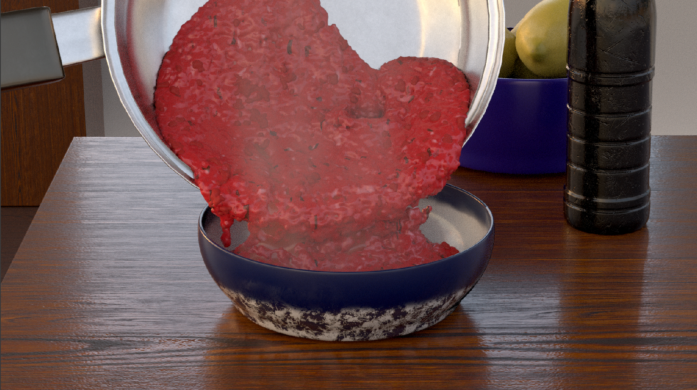
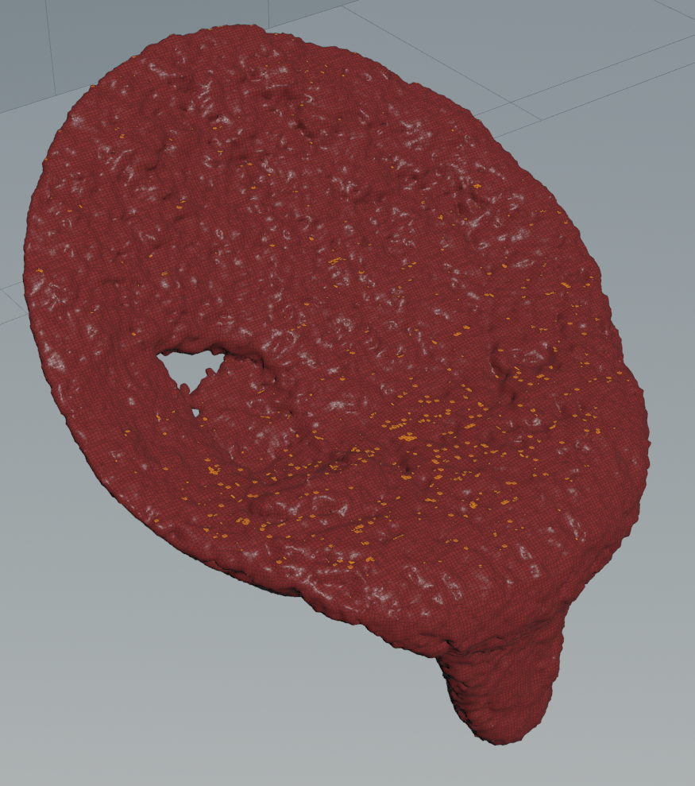
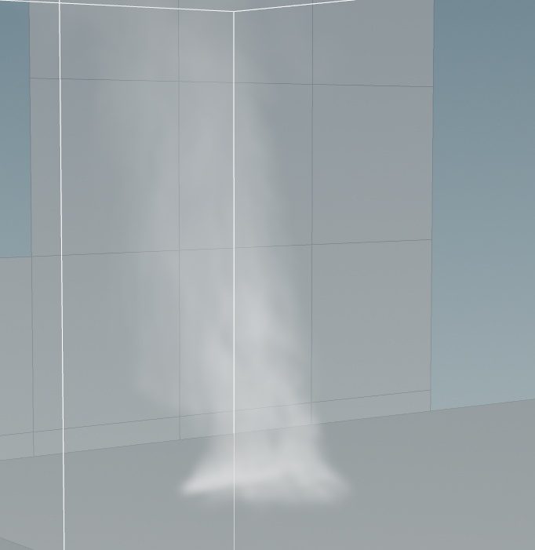
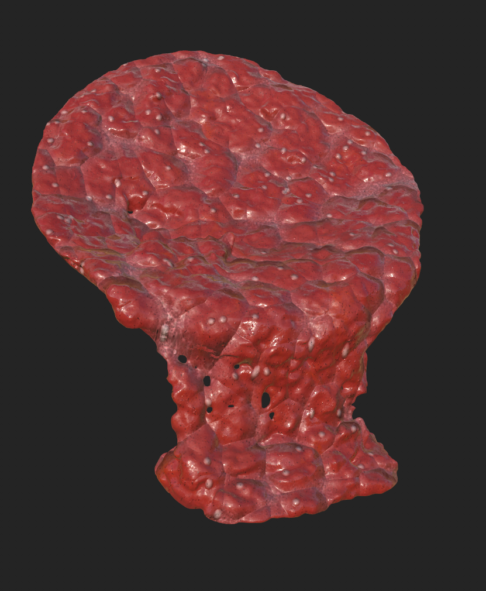
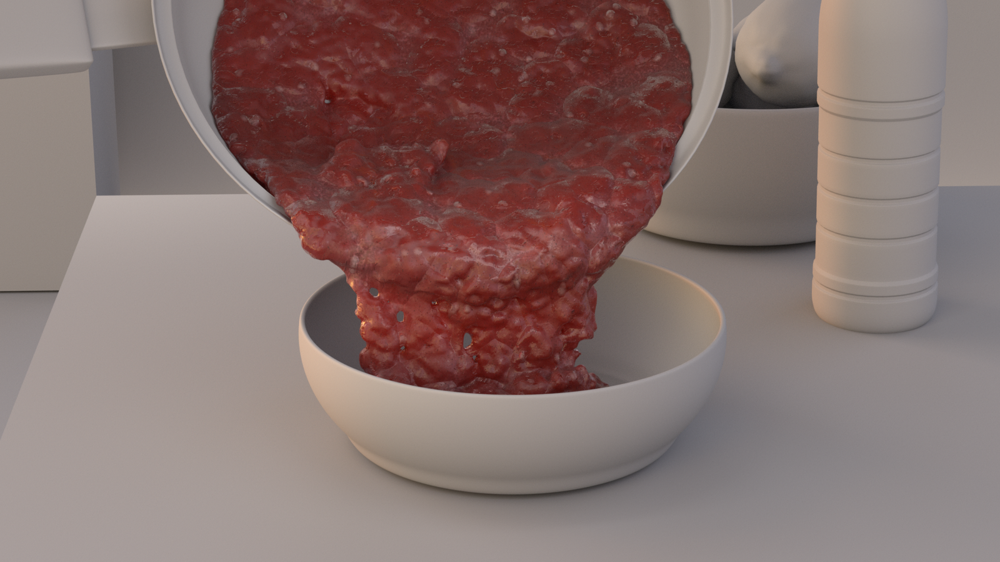
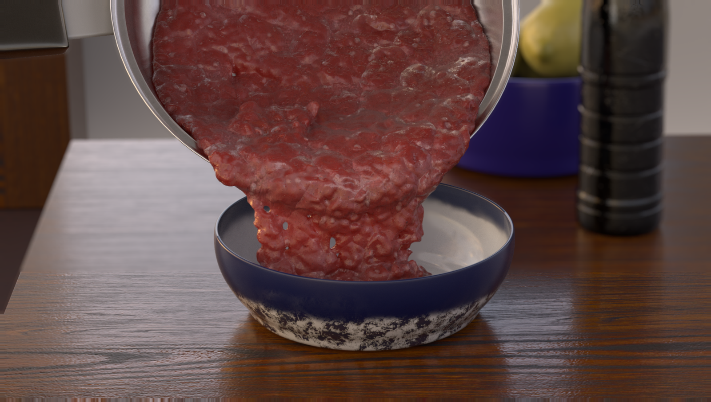

Hello, this is my final project of the VSFX 728's blog!
May 20
Things To Do:
1. Continue testing the pouring FX to match the reference better (I want to make some tomato sauce stick to the pot)
2. Add steam to the tomato sauce in the bowl
3. Improve the look development, especially for the tomato sauce—make it appear juicier and more realistic
Final Result (May 28)
Breakdown (May 28)
Final Test (FX)
Pouring Test
MPMCollider (Pot):
Friction: 0.2
Sticky: 0.05
MPMCollider (Pot):
Friction: 0.3
Sticky: 0.1
MPMCollider (Pot):
Friction: 0.5
Sticky: 0.5
MPMCollider (Spatulas):
Friction: 2
Sticky: 1
MPMCollider (Pot):
Friction: 0.3
Sticky: 0.5
MPMCollider (Spatulas):
Friction: 0.2
Sticky: 0.05
Look Development
I used Substance Painter to create the texture for the bowl so that it matches the reference.
Substance Painter
Test In Houdini

Substance Painter
Test In Houdini
This is the scene with look development completed, except for the tomato sauce.
May 25
Tomato Sauce
I added garlic to the tomato sauce texture and adjusted the color to match the reference.

Add Steam
I selected primitives from the tomato sauce surface and created a group based on their normals. Then, I used that group as the source to generate steam with Pyro.


May 28
I ended up using Substance Painter to create the tomato sauce texture, as it gave me greater control over the result.



Plans For Improvement (During Summer Vocation):
1. Refine the material for the tomato sauce
2. Re-simulate the tomato sauce to make it look like a mix of oil and sauce.